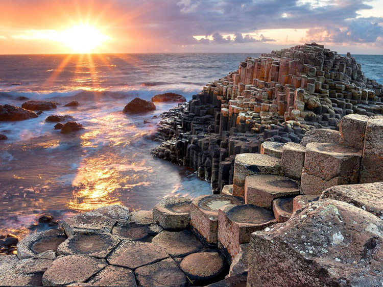
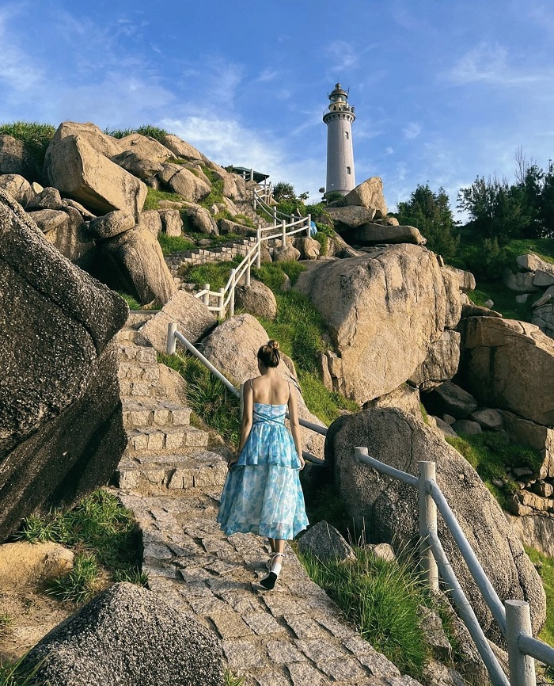
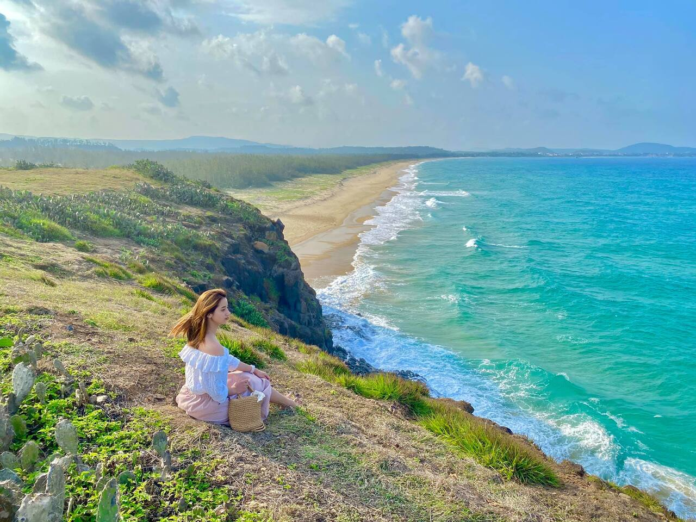
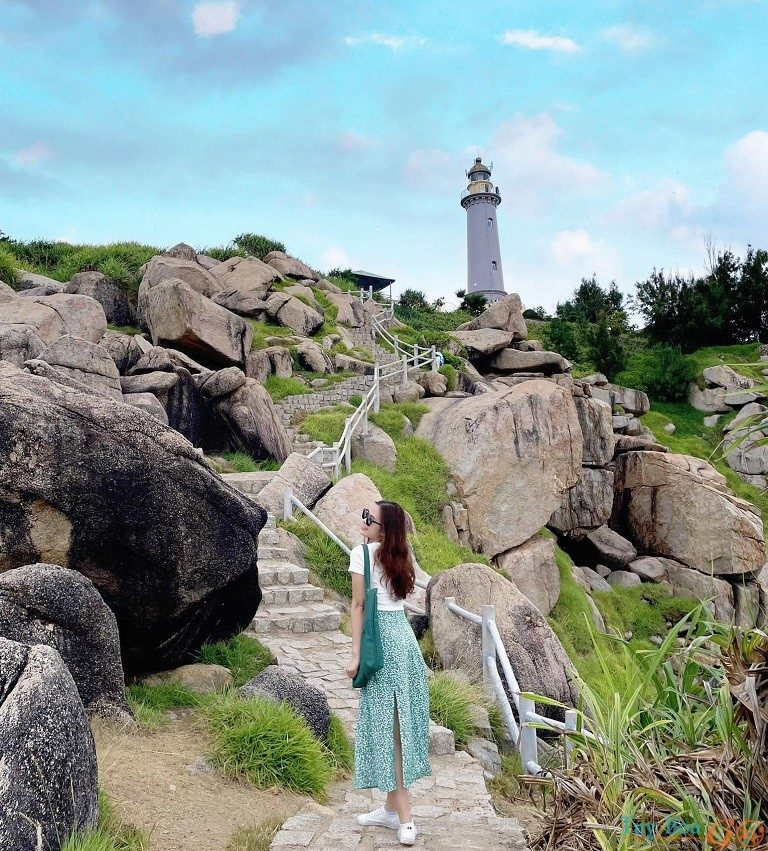

Gành Đá Đĩa
Kiệt tác thiên nhiên với những khối đá lăng trụ xếp chồng độc đáo nhất Việt Nam.
Phú Yên không chỉ có "Hoa vàng trên cỏ xanh", mà còn sở hữu những ghềnh đá kỳ thú, những bãi biển hoang sơ và lòng mến khách của người dân miền Trung. Hãy để chúng tôi dẫn lối bạn đến với thiên đường nghỉ dưỡng này.


Kiệt tác thiên nhiên với những khối đá lăng trụ xếp chồng độc đáo nhất Việt Nam.

Nơi quay bộ phim nổi tiếng, với bãi cỏ xanh mướt nhìn ra đại dương bao la.

Nơi đón ánh bình minh đầu tiên trên đất liền của Việt Nam với ngọn hải đăng cổ kính.
"Phú Yên đẹp hơn cả trên phim. Đồ ăn rất rẻ và ngon, đặc biệt là món mắt cá ngừ đại dương!"
- NGUYỄN VÕ PHÚ TỒN, Du khách Hà Nội